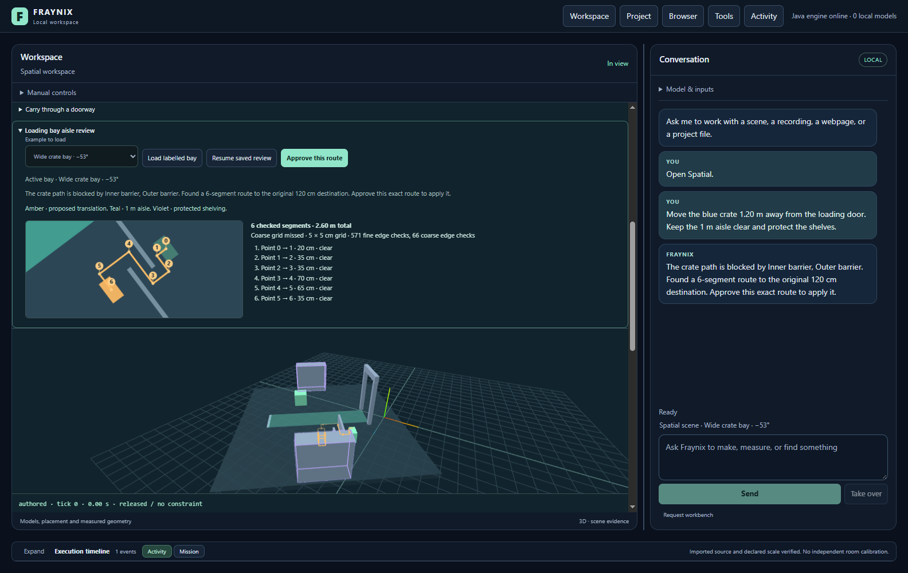
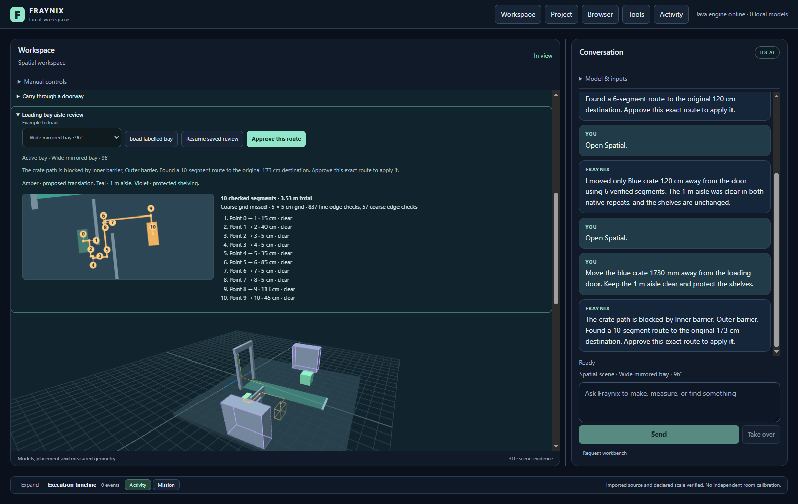
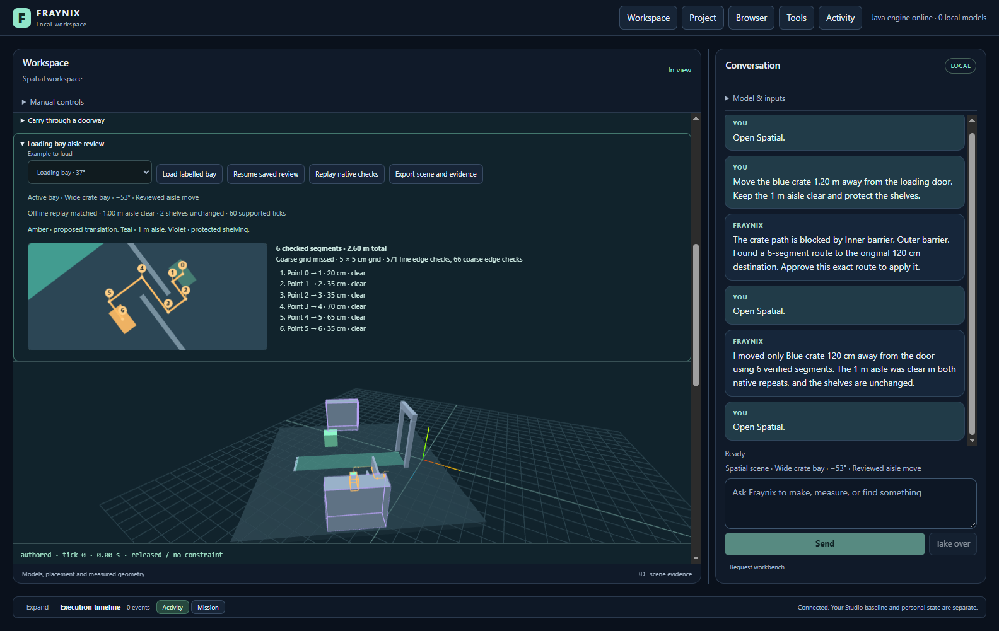

Refine routes for wider crates and longer moves
Load a wide-crate bay in Spatial. Ask for the exact advance and inspect the selected search resolution and each verified leg before approving.

The coarse grid missed and the six-leg finer route awaits approval

The 58 cm crate and its checked route to the exact 1.73 m destination

Native replay after restart retains the exact route and evidence
System files
Open source